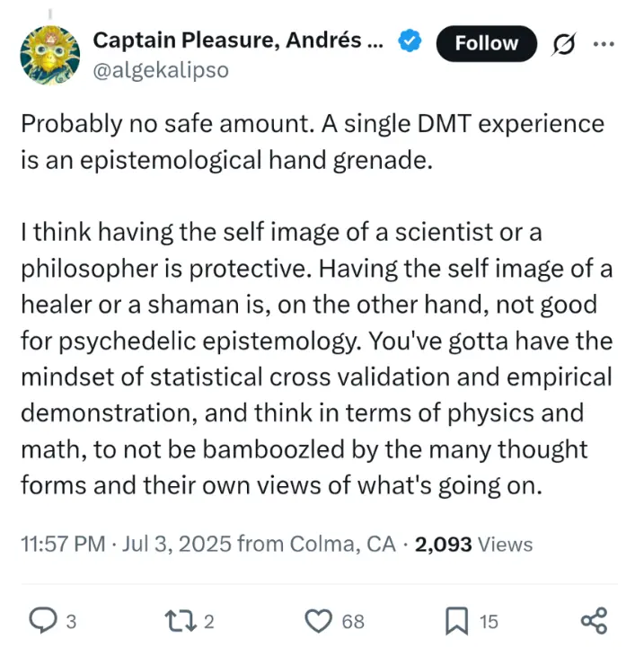
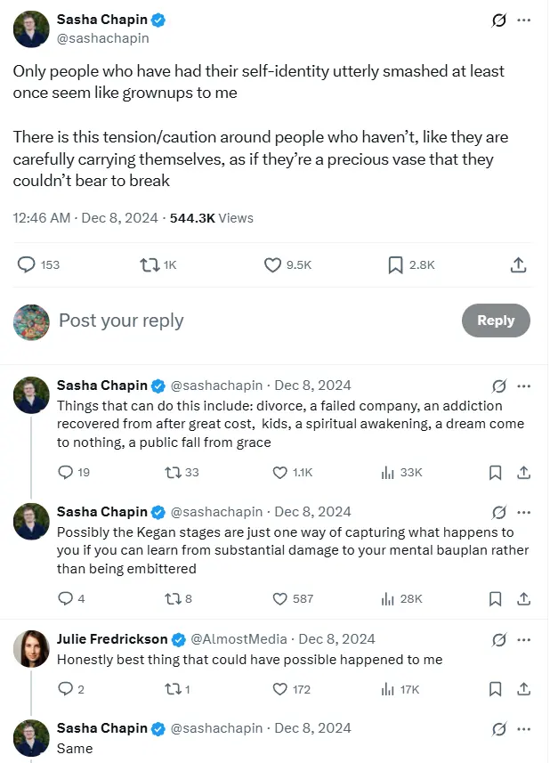
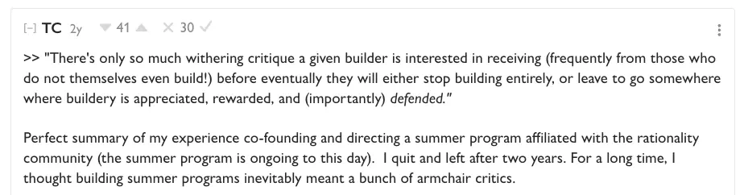

- Parent page → “How can I improve my ability to think?” (Parent Page)
- (This page has a lot of overlap with 03. Manifesto - “Why I Should Learn the Socratic Method”, but the aim is to make it more systematic and thorough, rather than a top-of-mind brain dump)
- 2025-07-05
- Continuing the file from yesterday
01. Why isn’t the Socratic method more popular?
- It’s reportedly very profound, powerful, essential, etc. E.g., here’s a quote from John Stuart Mill:
There is no author to whom my father thought himself more indebted for his own mental culture, than Plato, or whom he more frequently recommended to young student. I can bear similar testimony in regard to myself. The Socratic method, of which the Platonic dialogues are the chief example, is unsurpassed as a discipline for correcting the errors, and clearing up the confusions incident to the intellectus sibi permissus, the understanding which has made up all its bundles of associations under the guidance of popular phraseology. The close, searching elenchus by which the man of vague generalities is constrained either to express his meaning to himself in definite terms, or to confess that he does not know what he is talking about; the perpetual testing of all general statements by particular instances; the siege in from which is laid to the meaning of large abstract terms, by fixing upon some still larger class-name which includes that and more, and dividing down to the thing sought — marking out its limits and definition by a series of accurately drawn distinctions between it and each of the cognate objects which are successively parted off from it — all this, as an education for precise thinking, is inestimable, and all this, even at that age, took such hold of me that it became part of my own mind.
- So, why isn’t it popular?
1a. The Socratic method is painful
- It exposes our ignorance
- Which is the whole point, and the whole profundity of it, but this is definitely not something that we are hard-wired to enjoy!
1a1. Painful how? Ignorance-exposing
It could be that, if you introspect on your life goals, on the beliefs that currently animate you, you may find that the reasoning is faulty, that you don’t have the certainty that you thought you did
- This could definitely be argued to be worth it in the long run, but it’s undeniably costly. This feels akin to quitting your job and going on a “healing” journey, or starting on the spiritual path (better not to start, if started, better to finish), or doing psychedelics
- 👇Tweet I saw recently that I liked: “DMT as an epistemological hand grenade”

- 👇 Which also reminds me of this one

1b. The profundity isn’t evident
- Ignoti nulla cupido. There is no desire for the unknown.
- Even if the technique is incredible, there’s the circular problem of → as you’ve never experienced the profundity of the technique, there is therefore no desire to learn the technique
- Farnsworth talks about how the method doesn't promise to make us rich etc. And it’s a rare philosophy that doesn’t offer answers, just questions. So that’s kind of off-putting at first glance
- I would counter this by saying that - my current model is that the Socratic method actually could help you get rich, if you clear up your confusion (as much as you can), and end up finding some ~ground truths that you can then act on and monetise
- E.g., if you live in confusion, you may pivot from job to job, sector to sector, never quite finding the thing that you want to commit yourself to
- Whereas perhaps you can find the thing that you would want to commit yourself completely to, e.g., getting as certain as it’s possible to be that, for example, coaching is the thing that you want to get really good at. And then you commit yourself to it, get really good at it, and crucially, don’t pivot away, because it’s built on very solid foundations of self-knowledge
- It feels to me like it could be the best path to riches, but only if it turns out that you actually want to get rich. If you land on a ~ground truth that includes getting rich, then you’re probably going to unlock a huge amount of energy. But, you may also unlock a deep insight into why chasing money is a “commonplace” goal, rather than something you want
- I would counter this by saying that - my current model is that the Socratic method actually could help you get rich, if you clear up your confusion (as much as you can), and end up finding some ~ground truths that you can then act on and monetise
Kierkegaard:
“What a delusion most needs is the very thing it least thinks of —naturally, for otherwise it would not be a delusion”
1c. “I don’t want to be like Socrates, he was a dick”
- Also, Socrates was a total pain (“the gadfly”), and it may not be obvious that we would want to be like him
- The rationalists may model themselves on Socrates somewhat, and it’s very annoying
- 👇From the LessWrong post “Killing Socrates”

- However, I think this misunderstands Socrates, and also shows the difficulty of doing this stuff online
- It is very annoying, if you’re a builder, to get sniped by a bunch of nerds on LessWrong, who aren’t your in-person friends or colleagues who also want to help improve the thing, build the thing
- But Socrates wasn’t just some arm chair critic, a skeptic → he and Plato cared deeply about caring for the soul, for a healthy society, etc
2. Ok, so why is it good?
2a. “It’s a profound tool for thought”
- John Stuart Mill:
[the Socratic method] “is unsurpassed as a discipline for abstract thought on the most difficult subjects. Nothing in modern life and education in the smallest degree supplies its place”
- Wow, imagine not having access to this! AKA me, for almost 29 years, until now
[the method] “became part of my own mind; and I have ever felt myself… a pupil of Plato, and cast in the mold of his dialectics”
- Ok, but… profound how? How do you use it? We’ll get to that…
2b. It’s a profound tool to cure “the master mistake”
- From page 147:
- THE MASTER MISTAKE IS THIS:
“People vary widely in how much wisdom they have, but not in their sense of how much they have; anyone’s felt sense of wisdom at any given time tends to be high and stable”
-
Even if you’re very unwise, you may feel like you’re very wise
-
This is called “double ignorance”, as you’re ignorant of your ignorance
-
This is very dangerous; if you are humble and know that you’re ignorant of x, then you might not act, or you might not act until you’ve gathered some more info. But if you’re confident that you’re correct, but wrong, you may be brash and destructive.
- (See: politicians, Philip Tetlock’s “hedgehog” (vs “fox”)
-
“So let’s just call that sensation of one’s own wisdom a deceptive, insidious, and stubborn feature of human nature. This is the root of the problem that Socrates means to address; it is the master mistake that makes all other mistakes more likely, over a lifetime and by the hour. The Socratic method is a way to correct for it”
3. Our state: Confusion and ignorance
- Or, “the mind left to itself” (Intellectus sibi permissus)
- Our default state is confusion and ignorance
- This is a Buddhist truth, and a self evident one
- (Craving, aversion, and ignorance are the 3 cure “defilements” in Buddhism)
- To become “deconfused”
3a. Double ignorance
- Double ignorance = thinking we know things when we don’t
- This is why Socrates went around deflating Sophists, who boasted that they were experts in xyz, and charged for it
- So, double ignorance is the delusion of wisdom
- Double ignorance in my own life
- “Oh, I know my goals and values, they are xyz” → then 6 months later I update strongly and realise that I was totally wrong
- Self-delusion w/r/t plans and priorities → acting, spending time and resources on “I will do this thing because it is the correct thing to do”, when actually it may not be
- When you realise that you were deluded, acted too quickly based on “certain” beliefs that turned out to be provisional and in need of further inspection, you pivot again — shiny object syndrome, recency bias, being too action-biased (AKA, the story of my life)
- Self-delusion w/r/t your own wisdom and knowledge: professing to know the truth, to have certainty re: xyz, when actually you’re mistaken and could be disproven. May cause you to be pompous, judgemental, superior
- Also the story of my life: “oh, this person lives in a foolish way, why don’t they do x like me, it’s so ridiculous that they do y” → the Socratic method is very humbling re: “I have a huge amount of false beliefs and contradictions, and I should clean these up myself, and have much more patience and empathy with other people”
“Socratic philosophy starts with a love of truth, but as a matter of action its first task is negative: shaking off the delusion of wisdom”
Double ignorance and the Allegory of the Cave
- You think you know something
- Then later, you realise you were deluded
- Akin to the person in the Allegory of the Cave who is freed, and realised that they shadows that they took to be reality were just shadows
- And the person who is freed would absolutely hate to return to that state of ignorance, and would feel pity for their friends who are still there
- We are all in many caves, and have escaped various caves. Maybe Buddhism lets you escape the “ultimate” cave (e.g. by becoming enlightened, looking deeply into things like Emptiness, etc), but it’s probably more useful to recognise that you’ve already escaped a few caves, and are probably still in “the cave” in many different aspects of your life
3b. “The Commonplace” is the real enemy
“The enemy against whom Plato really fought, and the warfare against whom was the incessant occupation of the greater part of his life and writings, was not Sophistry, either in the ancient or the modern sense of the term, but Commonplace. It was the acceptance of traditional opinions and current sentiments as an ultimate fact; and bandying of the abstract terms which express approbation and disapprobation, desire and aversion, admiration and disgust, as if they had a meaning thoroughly understood and universally assented to.”
- This feels like things like “keeping up with the Joneses”, being a “normie”/“NPC” (both phrases I kind dislike but you know what I mean). Unreflective patriotism, participation in capitalism, etc. Also, what are we currently doing, that future generations will be horrified by? E.g. factory farming - I eat meat every day and definitely shouldn’t.
- Operating on unexamined beliefs and stories like “I guess I have to have a full time job and buy a house and etc”
3c. An inconsistent mind
- If you are inconsistent, then you are confused
- “Being inconsistent means being wrong. You find yourself holding two beliefs that are (let us assume) in undeniable conflict; they can’t both be right. That means you evidently believe something that is false, or your claim to believe them both is false”
- “If someone shows that your views are in conflict with new information, you might doubt the data. When your beliefs are in conflict with each other, it’s uncomfortable in a more direct way. You can’t attack the author of the study.”
- “He shows you that you think you’re wrong” - rather than telling you that you’re wrong, Socrates would show you (via the elenchus) that you claim to believe is inconsistent and paradoxical
- “Socrates has hogtied them with cords fashioned by their own consent”
- The key importance of intellectual consistency
- “To Socrates, this is everything”
- Performing surgery on yourself, heroic state
- Ridiculousness audit
- Care of the psyche, the soul, vs confusion
- Why Socrates was obsessed with definitions (page 83)
3d. To be at odds with yourself
- “People at odds with themselves in this way, on a Socratic view, ,also have practical problems. Their internal conflicts may disable them from acting decisively in the world, or can make them dangerous if they do. Thus the remark of Socrates about the effect of injustice within the self:
- “Is not injustice equally fatal when existing in a single person; in the first place rendering him incapable of action because he is not at unity with himself, and in the second place making him an enemy to himself and the just?“
4. Ok, so why is it good? (redux)
- Now we have more context re: our state, confusion, ignorance, running off “commonplace” beliefs, etc. Confident when we shouldn’t be (double ignorance). In the cave and acting as if we’re not. Acting with certainty and not stopping to check our assumptions (being a hedgehog rather than a fox)
4a. Deconfusing
- As I’ve written above, being less confused is a clear good
- The allegory of the cave → the person who escapes the cave would feel horror for their companions who are still in there, still priding themselves on their ability to name the shadows, predict which shadows will appear next, etc
- This is similar to how you may feel about your past self. Imagining going back to that place and not having xyz insights
- And as such, you can also imagine a you 1, 3, 5, 20 years from now, looking back on your current self with horror at your lack of wisdom
- “So, make haste!“
4b. Gathering true knowledge
- We may never truly know something, but we can land on things that seem like ground truths because they stand up to repeated attacks and attempted refutations
- This is Popperian (Karl Popper) truth, “evolutionary epistemology”, see also Bayesian reasoning. “I can’t guarantee with 100% certainty that this thing is true, but it seems to be 99% true, which is good enough for me”-type vibe
- “The production of cumulative consistency” - over time, you can build a foundation of things that seem true in the Popperian sense, which is very grounding and powerful. Reduce the chances that you’ll pivot, reduce the chance that you’re wasting time on something that future you will disavow
4c. Caring for your soul
- “Indeed, Socrates views internal contradiction as a kind of moral sickness”.
- “When people believe two things that can’t both be right, they’re half-asleep or half-mad”
- There’s stuff in the book about how your soul is currently kinda wretched (sorry to say)
- How a wiser you would see you (still in the cave)
- There’s alleatory uncertainty, which is the uncertainty of chance, that you can never untangle
- But there’s also epistemic uncertainty, which is uncertainty in your life that is due to a lack of knowledge
- You are acting in many ways that you wouldn’t, if you had more knowledge
- 🚨 Akrasia, Socratic ethics, everything is a knowledge problem
- “Conceits, like weeds, that block the growth of anything better”
- Socrates says that ethics/virtue comes down to a knowledge problem
- “Controversial” claim by the author:
- “Akrasia” (which I first learned about from this beeminder post and the rationality community) doesn’t actually exist
- Akrasia is when you act against your own self-interest. Having a donut when you’re on a diet, struggle to quit smoking, etc
- According to the author, Socrates would say that you can’t act against your own self-interest. All people want what is good for them, no one actively chooses what is bad for them, so you must be choosing the thing because you think it’s good for you, on net. So it’s a knowledge problem, because of e.g. hyperbolic discounting (the cigarette will provide a pleasant break now, the lung damage feels like a problem for 30-years-from-now you), etc
- This can unlock greater care, empathy, kindness, as you recognise that people aren’t acting out of their own self-interest in a way that makes no sense, but instead are choosing the option that they think is best, due to a lack of wisdom
- See also “coherence therapy”
Coherence therapy is a system of psychotherapy based in the theory that symptoms of mood, thought and behavior are produced coherently according to the person’s current mental models of reality, most of which are implicit and unconscious.
5. So, what does success look like?
5a. The disciplined mind
- (My prompt: If there’s “the mind left to itself” (intellectus sibi permissus), is there a Latin phrase for the alternative?)
- Gemini text:
- Yes, the direct alternative in Francis Bacon’s philosophy is
Interpretatio Naturae, which means “the interpretation of nature.” - Bacon framed these two concepts as a direct contrast representing the old, flawed way of thinking versus his new, proposed scientific method.
- The contrast
Intellectus Sibi Permissus(The Problem):- This is the mind left to itself. Bacon believed this state leads to what he called ==Anticipatio Mentis== (“Anticipation of the Mind”), where the mind rashly leaps to conclusions and imposes its own biased ideas onto the world without sufficient evidence.
Interpretatio Naturae(The Solution):- “The interpretation of nature”
- This is the disciplined mind. Instead of anticipating, it patiently and systematically observes nature, gathers data through experiments, and cautiously derives conclusions from that evidence. It is the slow, careful process of letting nature reveal its truths to the observer.
- Yes, the direct alternative in Francis Bacon’s philosophy is
- Ok shit, this rules! Anticipatio Mentis is the exact thing that has triggered me to start this project
- I developed my values My goals, values as of January 2025 → useful, good stuff
- BUT, as soon as I got them, I was like “ok, I guess this is the ground truth, I will commit myself to this now”, with some niggling issues in the back of my mind (“I still haven’t arrived at Effective Altruism in a first-principles way”, for example)
The direct alternative to "the mind left to itself"
in Francis Bacon's philosophy
is {{c1::Interpretatio Naturae}},
which means "{{c1::the interpretation of nature}}."
|
Franic Bacon believed that
"the mind left to itself"
leads to a state that he called
{{c1::Anticipatio Mentis}}
which means
{{c1::Anticipation of the Mind}}
|
"Anticipation of the Mind"
is where (3 lines):
{{c1::the mind rashly leaps to conclusions
and imposes its own biased ideas onto the world
without sufficient evidence.}}
|
3 things Bacon's "the anticipation of nature" involves:
{{c1::it patiently and systematically
observes nature
gathers data through experiments,
cautiously derives conclusions from that evidence}}
5b. A consistent mind
- If you are inconsistent, then you are confused
- “Being inconsistent means being wrong. You find yourself holding two beliefs that are (let us assume) in undeniable conflict; they can’t both be right. That means you evidently believe something that is false, or your claim to believe them both is false”
- “If someone shows that your views are in conflict with new information, you might doubt the data. When your beliefs are in conflict with each other, it’s uncomfortable in a more direct way. You can’t attack the author of the study.”
- “He shows you that you think you’re wrong” - rather than telling you that you’re wrong, Socrates would show you (via the elenchus) that you claim to believe is inconsistent and paradoxical
- “Socrates has hogtied them with cords fashioned by their own consent”
- The key importance of intellectual consistency
- “To Socrates, this is everything”
- Performing surgery on yourself, heroic state
- Ridiculousness audit
- Care of the psyche, the soul, vs confusion
- Why Socrates was obsessed with definitions (page 83)
Why being inconsistent means you're wrong:
{{c1::If you find yourself holding two beliefs that are in undeniable conflict - they can't both be right}}
- Parent page - “How can I improve my ability to think?” (Parent Page)